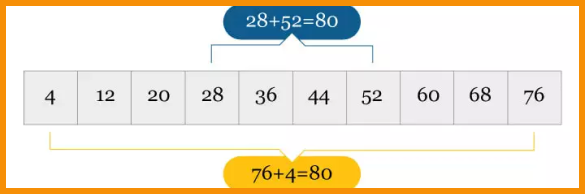

.png)
PROGRESSÃO ARITMÉTICA
Representa uma sequência numérica em que a diferença entre um termo e o seu antecessor possui o mesmo valor. A diferença comum entre esses termos é dada por uma constante, “r”, chamada de razão da progressão arit- mética. Na PA (2, 4, 6, 8, 10...) cada número representa um termo e a razão da progressão aritmética é 2, pois 4 - 2 = 2, 6 - 4 = 2 e assim por diante. Essa sucessão, representada pelas reticências, indica que essa é uma PA infinita. Já a sequência (1,6,11,16,21), cuja razão da progressão aritmética é 5, é ca- racterizada como uma PA finita, pois o número de termos é limitado e não existem reticências que indiquem a continuidade deles.
O princípio da progressão aritmética parece fácil, mas você sabe quem foi o pioneiro desse fundamento lógico? Segundo a história, Carl Friedrich Gauss com apenas dez anos de idade encontrou a fórmula do somatório dos termos da PA, representado por:
Onde:
Sn: soma dos termos
a1: primeiro termo
an: termo da enésima posição
n: posição que o termo ocupa
Na PA infinita podemos observar que a soma do primeiro e do último termo é igual à soma do segundo termo com o penúltimo termo e assim ordenadamente. E somar cada dupla de termos, encontramos sempre o mesmo valor:
Sn = a1 + a2 + a3 + … + an-2 + an-1 + an,
a1 + an= a2 + an-1 = a3 + an-2
Agora vamos encontrar soma dos 100 primeiros termos da PA (1,2,3,4,5...) utilizando a fórmula do somatório:
TIPOS DE P.A
P.A Crescente
Uma PA é dita crescente se cada termo, a partir do segundo, é maior que o termo anterior. Nesse caso a razão é sempre maior que zero. Exemplo:
(-1, 0, 1, 2, 3...) r = 1P.A Decrescente
Uma PA decrescente cada termo, a partir do segundo, é menor que o termo anterior. Nesse caso a razão é sempre menor que zero. Exemplo:
(-3, -6, -9, -12 …) r = -3P.A Constante
Uma PA é constante ou estacionária quando todos os termos são iguais. Nesse caso a razão é sempre igual a zero. Exemplo:
(1,1,1,1,1...) r = 0PROPRIEDADES
1ª Propriedade: em uma PA finita, a soma dos dois termos equidistantes é igual à soma dos extremos.
2ª Propriedade: tendo em vista os três termos consecutivos de uma PA, o termo médio é igual a média aritmética dos outros dois termos.
3ª Propriedade: em uma PA finita e ímpar, o termo do meio será igual a média aritmética do primeiro termo com o último termo.
Para melhorar seus estudos...
Matemática pode ser um conteúdo difícil. Para aumentar seu aprendizado, acesse ao mapa mental e a playlist de vídeo aulas sobre este assunto:
Mapa mental playlist de videoaulas